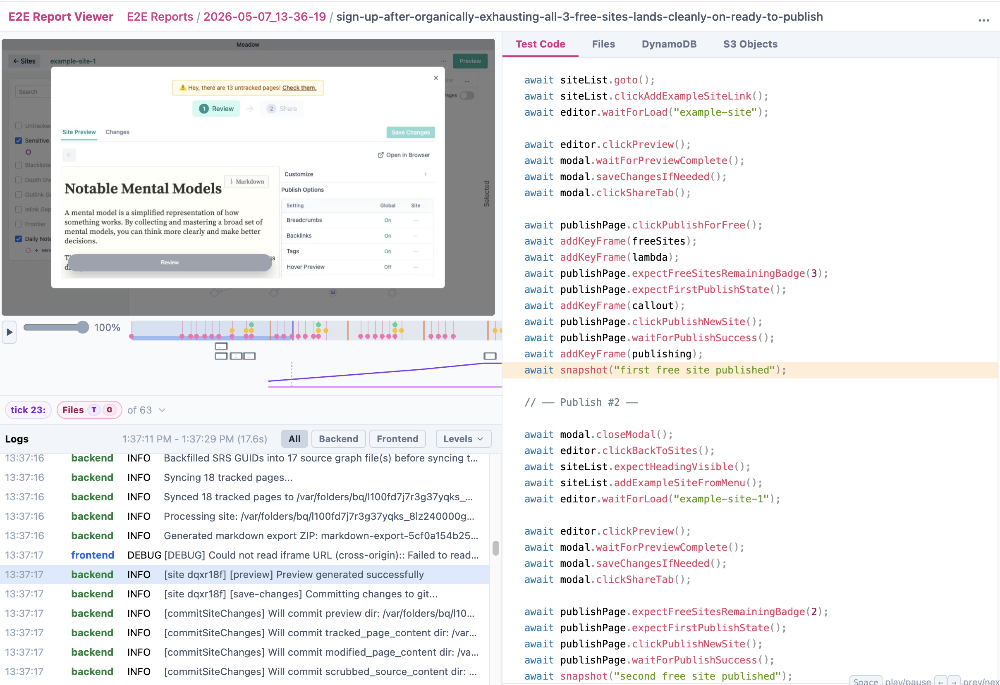
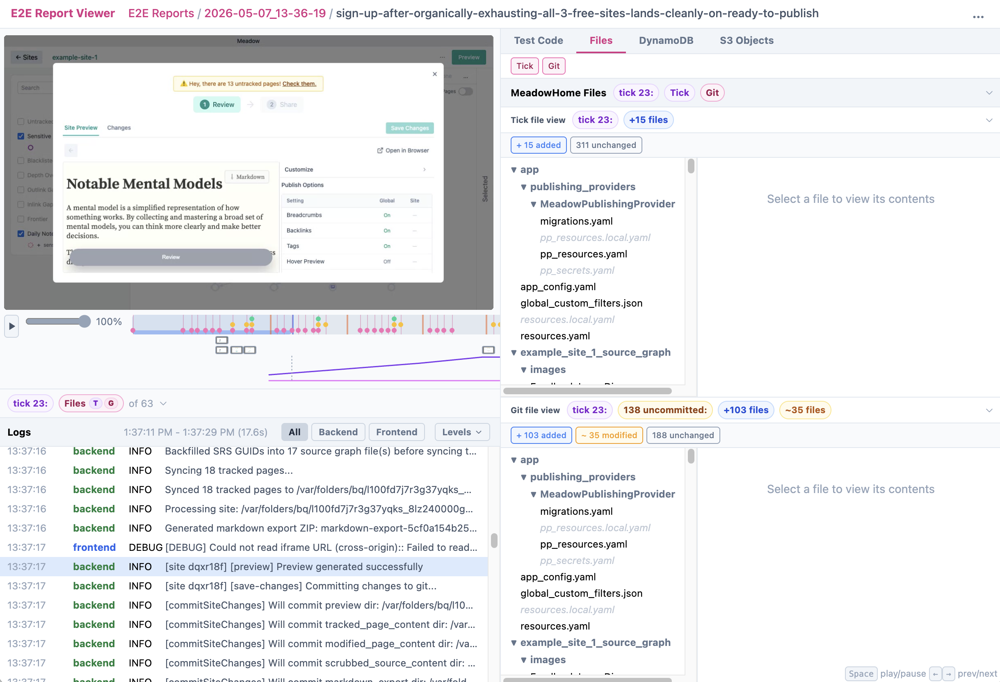
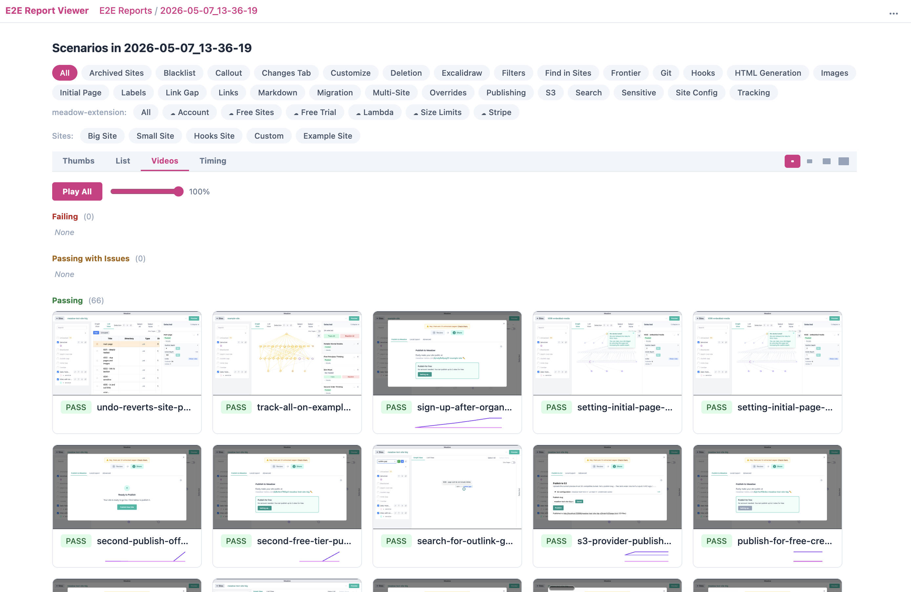

practice - custom review tooling
^ agentic engineering practice - custom review tooling
Practice
Since human review time is so valuable, it makes sense to make it incredibly easy to review the changes.
Status 🟢
I've created a change review app powered by e2e tests. It creates scenario artifacts that are synchronized with the video of the E2E test. The artifact includes the test code (show below), which is synced with the video. It also includes all the data about what is stored on the filesystem, in cloud stateful storage, and in S3. All of it is link not trackedable.

Here we show being able to browse the information on the filesystem at the time:

For an individual run, you can play all the videos at once (or pared down to an area of application functionality)

This review tooling is available in the link not tracked.
I'm also able to kick off a link not tracked from that same tooling.
It all works with worktree development. The scenario artifacts end up in a centralized place so you can easily compare and contrast different worktrees.
It's not perfect, though. Ideally we'd be able to fork and run development tooling starting at any point in any of the videos. Additionally, if you have a change review app, you'd also want to be able to review the code right there, too, in some kind of high-level code review system (folders/filenames/method signatures). A guy at Anthropic makes link not tracked. Perhaps a review graph would be a good idea. Also, being able to comment on parts of the video and when the agent addresses your change it opens the new video to that exact point.
I also don't have the ability to look at this review app from my phone, which is limiting.
Anyhow, if you think about a totally custom review application, you realize the possibilities are endless and pretty compelling. Seems like fertile ground for exploration.
Sources
The first time I saw videos being taken by agents was in t cursor video demos back in 2025.
In T article the unreasonable effectiveness of HTML - 2027-05 he talks about how he includes link not tracked